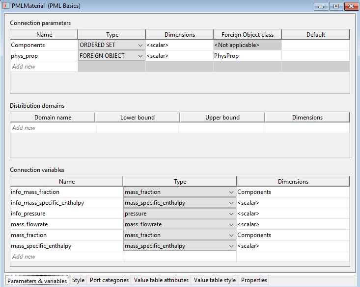

See also: Declaring Connection Types
Connections between different Units in a flowsheet Model are associated with a Connection Type which defines the type of information conveyed by the connection.
A Connection Type definition includes
A declaration of a set of Parameters, Distribution domains and Variables; these are identical to those that are declared in Models.
AGraphical representation.
Connectivity rules to allow and forbid connections between Ports of different categories.
A Display template which specifies how any connection based on this Connection Type appears in results stream tables.
A connections to or from a Unit is made from its Model Port. Model Ports are associated with a Connection Type and all the quantities declared by the Connection Type are automatically included in the Model that declares the Port.
When a connection between two Ports is made in a flowsheet Model; all the Variables, Parameters and Distribution domain are equated.

The PMLMaterial Connection Type from the gPROMS Process Model Library - Parameters and Variable declaration tab
When developing gPROMS Models you can either use existing Connection Types such as those that are found in the gPROMS Process Model Library (PML) or you can define your own Connection Types.